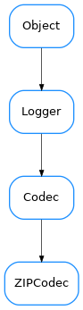

ZIPCodec¶

-
class
ZIPCodec[source]¶ Bases:
taurus.core.util.codecs.CodecA codec able to encode/decode to/from gzip format. It uses the
zlibmoduleExample:
>>> from taurus.core.util.codecs import CodecFactory >>> # first encode something >>> data = 100 * "Hello world\n" >>> cf = CodecFactory() >>> codec = cf.getCodec('zip') >>> format, encoded_data = codec.encode(("", data)) >>> print len(data), len(encoded_data) 1200, 31 >>> format, decoded_data = codec.decode((format, encoded_data)) >>> print decoded_data[20] 'Hello world\nHello wo'
-
decode(data, *args, **kwargs)[source]¶ decodes the given data from a gzip bytes.
- Parameters
data (
sequence[str, obj]) – a sequence of two elements where the first item is the encoding format of the second item object- Return type
sequence[str, obj]- Returns
a sequence of two elements where the first item is the encoding format of the second item object
-
encode(data, *args, **kwargs)[source]¶ encodes the given data to gzip bytes. The given data must be bytes
- Parameters
data (
sequence[str, obj]) – a sequence of two elements where the first item is the encoding format of the second item object- Return type
sequence[str, obj]- Returns
a sequence of two elements where the first item is the encoding format of the second item object
-